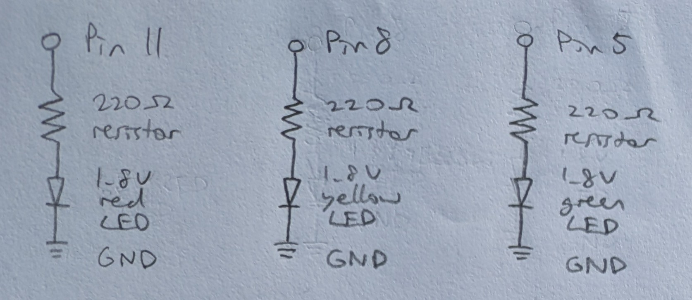
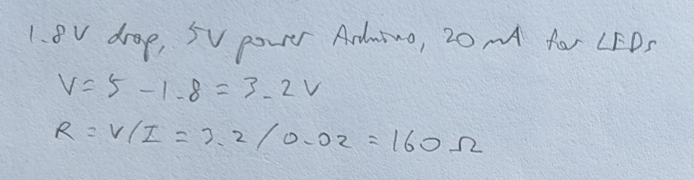
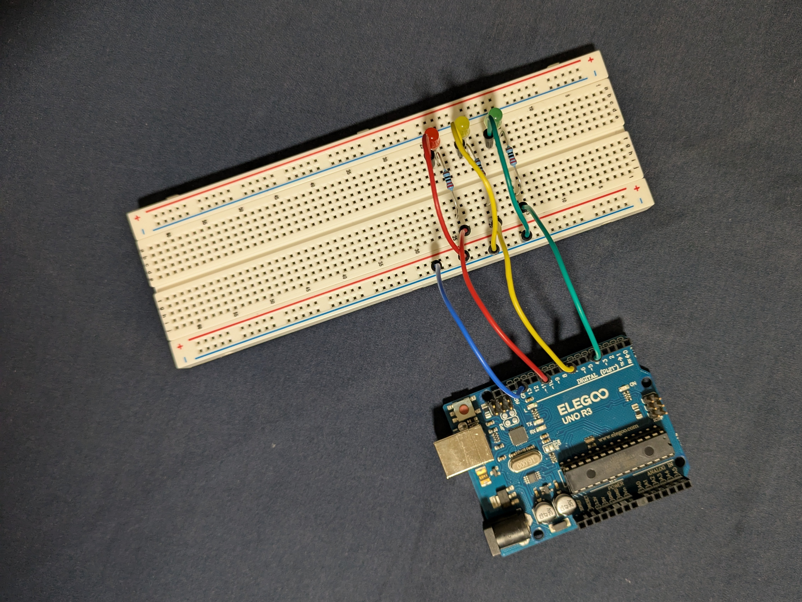
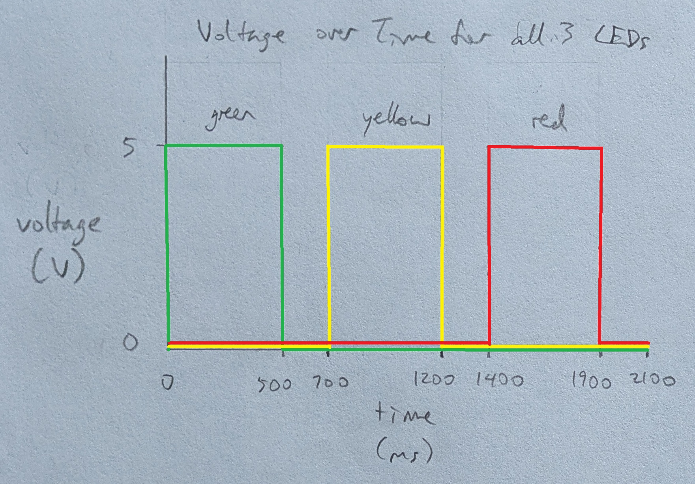

Requirements
- 3+ LEDs with current limited using resistors, all of which blink independently
Schematic
Calculation
Circuit
Firmware
link to code file
/*
Blink
Built with Examples/01.Basics/Blink
Turns 3 LEDs on for one second, then off for one second, repeatedly, one after another.
The LEDs are attached to pins 5, 8, and 11.
modified 1 Oct 2025
by Heidi Wang
*/
// the setup function runs once when you press reset or power the board
void setup()
{
// initialize pin 5 as an output
pinMode(5, OUTPUT);
// initialize pin 8 as an output
pinMode(8, OUTPUT);
// initialize pin 11 as an output
pinMode(11, OUTPUT);
}
// a helper function to blink the given LED
void blink(int led)
{
// turn the LED on (HIGH is the voltage level)
digitalWrite(led, HIGH);
// wait for a second (1000 milliseconds)
delay(500);
// turn the LED off by making the voltage LOW
digitalWrite(led, LOW);
// wait for a second (1000 milliseconds)
delay(200);
}
// the loop function runs over and over again forever
void loop()
{
// calls the blink function for pin 5
blink(5);
// calls the blink function for pin 8
blink(8);
// calls the blink function for pin 11
blink(11);
}
Operation
Questions
- 
-
The Arduino Uno R3 has 14 digital I/O pins. If each of them is connected to an LED, then 14 LEDs can be blinked independently. With each LED run at 20mA, 14 LEDs would draw 280mA of current.
-
The number of LEDs on at a time does not affect how many LEDs can be blinked with this setup. Thus, 14 LEDs is still the max LEDs that can be blinked consecutively.
-
It is no longer visually apparent that the LEDs are blinking at around 24ms of delay between voltage changes.
-
No AI use.